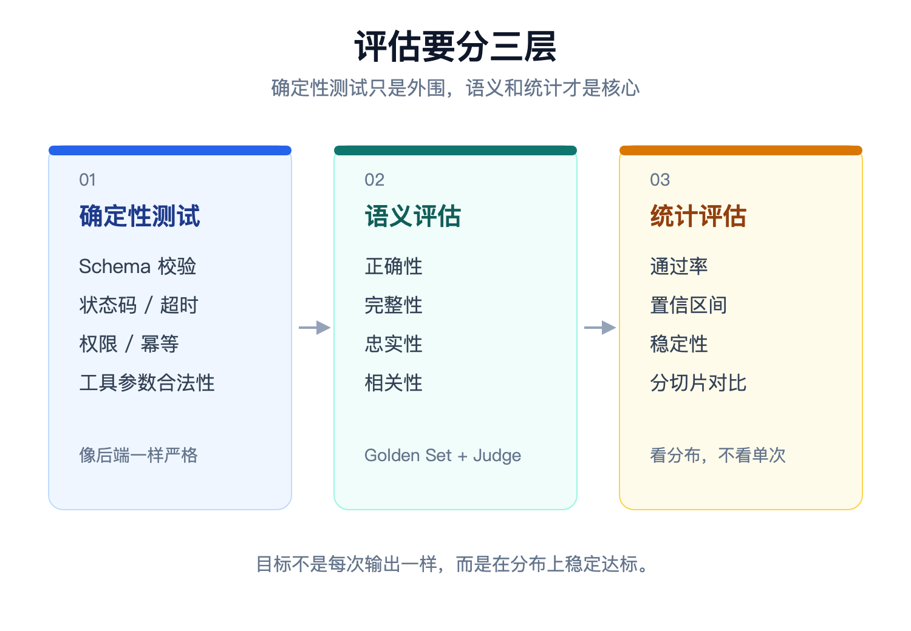
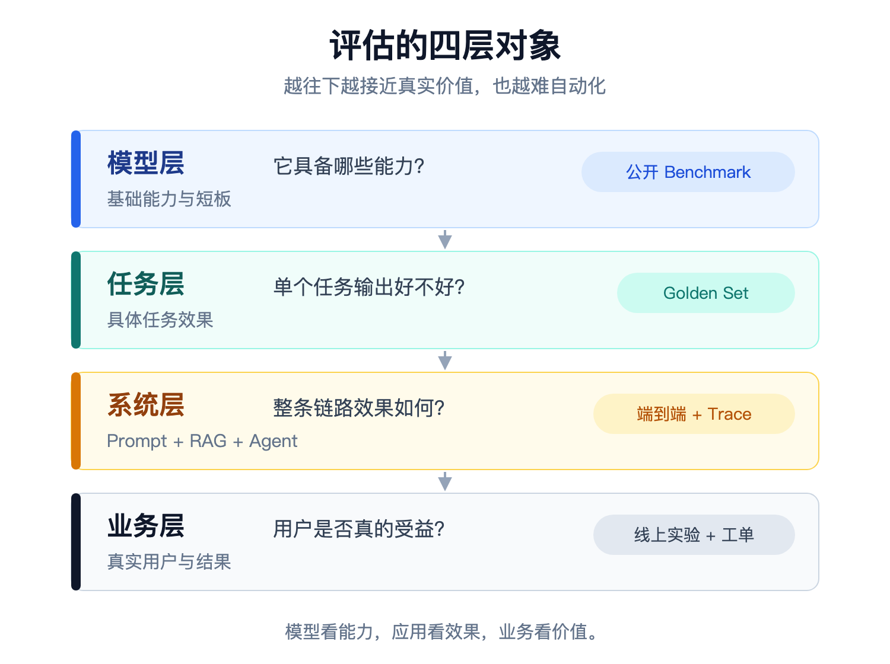

输出不确定、传统测试失效，以及评估到底在评什么
很多团队做大模型应用，第一版 demo 往往很惊艳。再加几个 Prompt，接上知识库，看起来就能用了。
但一到上线评审，问题就来了：
这些问题，靠“我试了一下，感觉不错”回答不了。
这个系列想讲清楚一件事：大模型评估不是跑几个 Benchmark、看一个分数，而是一套贯穿选型、开发、上线和运营的工程体系。
第一篇先回答三个问题：为什么必须评、到底评什么、为什么这么难。
假设你要上线一个企业内部知识库问答系统，用户是客服和运营。
数据源包括产品文档、FAQ、历史工单和制度文件。
上线评审时，下面这些问题必须被回答：
| 评估项 | 指标 | 示意门槛 |
|---|---|---|
| 回答正确 | Answer Correctness | ≥ 85% |
| 忠于资料 | Faithfulness | ≥ 0.90 |
| 引用可信 | Citation Accuracy | ≥ 90% |
| 该拒就拒 | Refusal Accuracy | ≥ 90% |
| 高危安全 | 攻击成功率 | 0 |
| 响应时间 | P95 延迟 | ≤ 4 秒 |
| 单次成本 | 元/成功任务 | ≤ 0.05 |
注意，这不是一个指标，而是一组相互制约的指标。
准确率达标但引用全错，客服不敢用；引用都对但 P95 延迟 15 秒，客服不想用；一切正常但单次成本太高，只能停留在试点。
评估的产出不是“好不好”，而是“在哪些维度上、以多大代价、达到什么水平”。
这些门槛也不是拍脑袋定的，而是从业务后果倒推：
门槛应该在试点期用真实数据校准，然后写进上线制度。
传统后端系统里，同样的参数会返回同样的结果。
大模型不是这样。它是一个概率模型：
| 变化来源 | 典型影响 | 工程后果 |
|---|---|---|
| 采样参数 | 温度高更发散 | 必须固定并记录参数 |
| Prompt 措辞 | 格式和重点漂移 | 每次修改都要回归 |
| 上下文顺序 | 关键信息被淹没 | 要评估上下文利用率 |
| 模型升级 | 能力不是全面上涨 | 升级前必须跑回归集 |
| 外部环境 | 检索和工具结果变化 | 必须记录链路 Trace |
除了不确定，模型还会出现几类典型问题：
这些问题大多不会让程序抛异常。
系统正常返回 200，日志没有报错，只有用户看到一个语气自信但内容错误的答案。
这类“静默失败”，比显式报错更难发现，也更需要专门的评估手段。
传统测试并没有失效，只是需要分层：

图 2：确定性测试、语义评估、统计评估，三层各司其职。
换句话说，目标不是“证明每次输出都一样”，而是“证明在给定分布下，质量稳定高于一条可接受的基线”。
第一，模型选型没有依据。
只看榜单、价格或同事推荐。榜单考的是通识与推理，和“能否稳定输出内部工单格式的 JSON”是两件事。
第二，Prompt 优化不可量化。
这次回答看起来更顺眼，就合并上线；过两天另一个场景坏了，又改回去。没有回归集，Prompt 会在一轮轮局部优化中积累隐性退化。
第三，RAG 和 Agent 难以迭代。
RAG 答错了，可能是解析、切分、Embedding、检索、重排、拼接或生成中任一环出错。没有分阶段指标，只能靠猜。
Agent 也一样：任务失败，可能是规划错、工具选错、参数错，或者只是环境超时。
第四，上线后质量不可控。
没有线上监控和失败回流，问题只能靠用户投诉发现。投诉率低，不等于质量好，很多用户遇到错误会直接放弃。
第五，成本、延迟与安全无法平衡。
想更准，可以换更大模型、检索更多文档、让 Judge 多轮校验。但每一项都会推高延迟和成本。
没有评估，就无法判断“多花 30% 成本换 2 个点准确率”值不值。
评估不是一个指标，而是四层对象：
| 层级 | 评什么 | 典型数据 |
|---|---|---|
| 模型层 | 基础能力与短板 | 公开 Benchmark |
| 任务层 | 单任务输出质量 | Golden Set |
| 系统层 | 整条链路的效果 | 端到端评估集 |
| 业务层 | 真实用户与结果 | 线上实验、工单 |

图 1：评估分四层，越往下越接近真实价值。
模型层看能力覆盖，任务层看任务效果，系统层看 Prompt、RAG、Agent 和工具链，业务层看用户是否真的受益。
基础模型能力可以拆成几个维度：
| 能力 | 代表基准 | 业务含义 |
|---|---|---|
| 通识知识 | MMLU、C-Eval | 知识底座 |
| 数学推理 | GSM8K、MATH | 报表与规则推导 |
| 代码能力 | HumanEval、MBPP | 代码助手、SQL |
| 事实性 | TruthfulQA | 不跟着谣言胡说 |
| 常识推理 | HellaSwag、BBH | 多步判断 |
| 长上下文 | LongBench、RULER | 合同、长报告 |
| 安全对齐 | 红队集、毒性集 | 合规与品牌风险 |
这些基准的缩写不重要，重要的是建立映射：这个分数代表哪种能力，这种能力对应哪个业务问题。
MMLU 考多学科选择题，不考长文写作，也不考工具调用。GSM8K 考小学应用题，不代表能处理真实财务报表。HumanEval 考短函数，不代表能修真实仓库。
SWE-bench 更接近工程场景，但也更贵、更慢。
模型评估、应用评估、业务评估的关系，可以概括成一条漏斗：
模型评估 → 应用评估 → 业务评估
能力初筛 → 系统验收 → 真实价值
模型评估回答“能不能用”，应用评估回答“在我们的系统里好不好用”，业务评估回答“值不值得继续投入”。
三者缺一不可，但决策权重会随阶段变化。
难的不是算指标，而是“正确”本身难以定义、难以复现、难以廉价判断。
| 难点 | 典型表现 | 缓解 |
|---|---|---|
| 输出非确定 | 同题不同答 | 固定参数、重复运行 |
| 答案不唯一 | 同义表达被判错 | 可接受答案集、要点评分 |
| 语义难判断 | 一词之差意思相反 | 事实核验、Judge、人工 |
| 任务边界模糊 | 多意图、缺上下文 | 意图建模、澄清策略 |
| 长文难量化 | 局部错误被平均 | 分段评估、关键点清单 |
| 幻觉难检测 | 语气自信但编造 | 引用约束、claim 核验 |
| 数据污染 | 分数虚高 | 时间切分、重叠检测 |
| 榜单脱节 | 高分低能 | 企业 Golden Set |
| 人工成本高 | 慢、贵、主观 | Rubric、双标、抽样 |
| Judge 有偏差 | 偏好长答案和格式 | 去标识、换序、多裁判 |
几个难点值得展开。
输出非确定性。
固定参数、固定种子，也只能降低方差，不能消除差异。所以单次运行不能作为结论。
对关键样本，建议重复运行 3–5 次，报告均值、方差和通过率。
语义正确难以自动判断。
“不能退款”和“可以退款”只差一个字，意思相反。
BLEU、ROUGE 高的答案，可能事实完全错误。关键词命中，也可能否定关系反了。
所以开放式任务不能只靠 n-gram 指标，必须引入事实核验、要点匹配和人工校准。
Benchmark 分数不等于业务效果。
榜单第一的模型，在内部知识库问答上可能不如榜单第十的模型。
因为业务还考私有知识、格式、流程、权限和成本。
Benchmark 是体检，不是录用通知。
LLM Judge 也有偏差。
裁判模型会偏好更长的答案、更漂亮的格式、排在前面或来自同系列模型的输出。
它也可能幻觉，尤其是在证据不足时编造理由。
Judge 可以扩大覆盖，但不能替代人工校准，更不能直接作为高风险场景的最终裁决。
这一篇讲了三个结论：
下一篇讲方法：Benchmark、Golden Set、人工评估、自动指标、LLM Judge 和线上 A/B，分别适合什么场景，又各自有什么坑。
下一篇：六种评估方法，别只盯着 Benchmark。